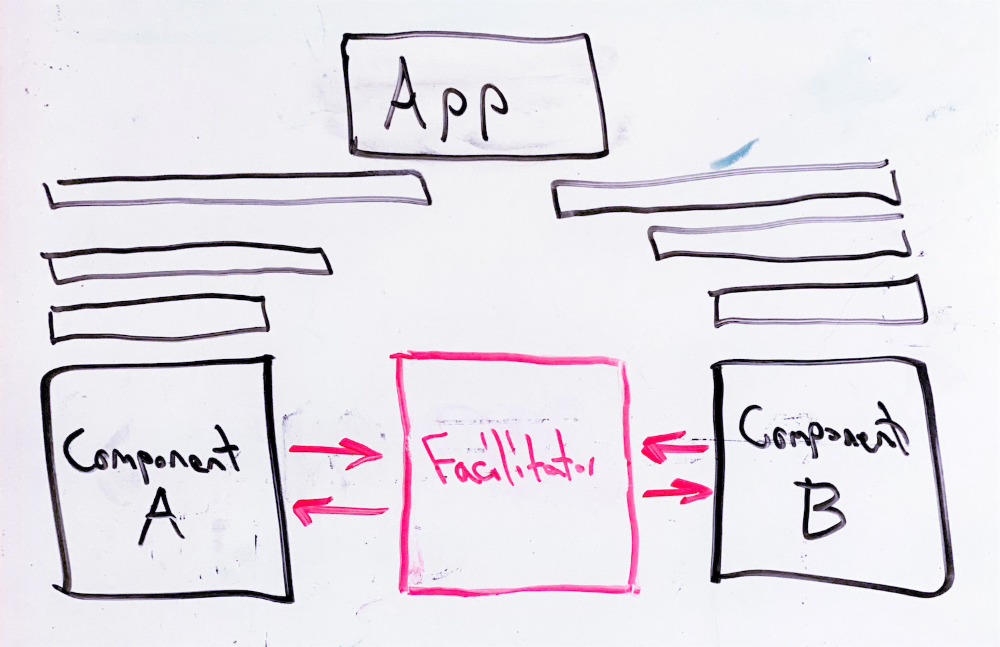

I work on AI + dev tools.
This is the third post in my series on horrible design patterns that I use for quickly implementing experimental features in large software projects that I'm unfamiliar with. Check out the other posts on Object Dictionaries and Catch All.
For example, to implement Yestercode I needed to actively communicate between the system's undo manager, compiler, and visual code editor. All three components were fairly complex and obviously weren't architected for passing information amongst each other like I wanted.
Here comes the Facilitator pattern!
The Facilitator is a hodgepodge of other design patterns. It involves a global object that will maintain references to any components that need to communicate as well as a set of variables for message passing. This enables Component A to get a reference to Component B through the Facilitator and for "passing" information by setting and getting member variables in the Facilitator. Since I often ran into timing issues with this pattern, I used boolean flags for signifying when an event completed which a component was dependent on (oh, the joys of async!). Here is some pseudo code based on my earlier example:
class Facilitator {
// References to the components that need to communicate.
UndoManager undoManager;
Compiler compiler;
CodeEditor editor;
// Information to be passed.
UserEvent lastAction;
ASTNode changedCode;
VisualElement selectedElement;
// Flags for ensuring certain events have completed.
bool undoCompleted = False;
bool compileCompleted = False;
bool drawingCompleted = False;
}
Now I can start hacking on the individual components. To use this pattern, I update each component's constructor to pass a reference of itself to the Facilitator. Then I hijack a variety of existing events in each component where I need to pass or retrieve information using the Facilitator. For example, whenever an action is logged by the UndoManager, I need to pass that info to the Facilitator while using a boolean flag to ensure the UndoManager's async task is completed, then fire off my own event that will pass the info on to the editor.
Easy enough! This is just a hacky solution to facilitate data passing between components that originally weren't designed to do so. Once again, don't try this at work!
Read about real design patterns: Design Patterns: Elements of Reusable Object-Oriented Software.